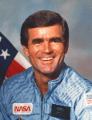

Lyndon B. Johnson Space Center
Houston, Texas 77058
|
National Aeronautics and Space Administration Lyndon B. Johnson Space Center Houston, Texas 77058 |
 |
Biographical Data |
||
Charles Lacy Veach (Mr.)
NASA Astronaut
PERSONAL DATA: Born September 18, 1944, in Chicago, Illinois, but considered Honolulu, Hawaii, to be his hometown. Married to the former Alice Meigs Scott of Waycross, Georgia. Two children. He enjoyed surfing, bicycling, reading, and activities with his family. His parents, Mr. and Mrs. Marshall E. Veach, reside in Honolulu, Hawaii. Her mother, Mrs. Myrtle Lee Scott, resides in Augusta, Georgia. Her father, Commander Frank V. Scott, Jr., is deceased.
EDUCATION: Graduated from Punahou School, Honolulu, Hawaii, in 1962; received a bachelor of science degree in engineering management from the U.S. Air Force Academy in 1966.
SPECIAL HONORS: Distinguished Flying Cross with 2 Oak Leaf Clusters, Air Medal with 13 Oak Leaf Clusters, Air Force Commendation Medal with 1 Oak Leaf Cluster, and Purple Heart.
EXPERIENCE: Veach was commissioned in the United States Air Force upon graduation from the Air Force Academy. He received his pilot wings at Moody Air Force Base, Georgia, in 1967, and then attended fighter gunnery school at Luke Air Force Base, Arizona. Over the next 14 years, he served as a USAF fighter pilot, flying the F-100 Super Sabre, the F-111, and the F-105 Thunderchief, on assignments in the United States, Europe, and the Far East, including a 275-mission combat tour in the Republic of Vietnam. In 1976 and 1977, he was a member of the USAF Air Demonstration Squadron, the Thunderbirds. Veach left active duty in 1981, but continued to fly fighters as an F-16 pilot with the Texas Air National Guard. He had logged over 5,000 flying hours.
NASA EXPERIENCE: Veach came to work for NASA in January 1982 as an engineer and research pilot at the Johnson Space Center in Houston. His primary duty was as an instructor pilot in the Shuttle Training Aircraft, the highly modified Gulfstream II used to train astronaut pilots to land the Space Shuttle.
Veach was selected as an astronaut candidate in May 1984, and became an astronaut in June 1985. He held a variety of technical assignments, and had flown as a mission specialist on two Space Shuttle missions, STS-39 in 1991 and STS-52 in 1992. He had logged 436.3 hours in space. Most recently, Lacy had worked as the lead astronaut for the development and operation of robotics for the International Space Station.
On STS-39, Veach was responsible for operating a group of instruments which included an ultraviolet astronomical camera, an x-ray telescope, and a liquid helium-cooled infrared telescope which performed landmark observations of the Earth's atmosphere and the Aurora Australis (the Southern Lights). The 8-day unclassified Department of Defense mission aboard the Orbiter Discovery launched from the Kennedy Space Center in Florida on April 28, 1991, and landed at Kennedy on May 6, 1991.
STS-52 was a 10-day mission aboard the Orbiter Columbia during which the crew successfully deployed the Laser Geodynamic Satellite (LAGEOS), a joint Italian-American project. They also operated the first U.S. Microgravity Payload (USMP) with French and American experiments. Veach was the primary Remote Manipulator System (RMS) operator on the mission, supporting the initial flight tests of the Canadian-built Space Vision System (SVS). STS-52 launched from the Kennedy Space Center in Florida on October 22, 1992, and landed at Kennedy on November 1, 1992.
Lacy Veach died in Houston, Texas, on October 3, 1995, of cancer.
OCTOBER 1995
{kind=link}